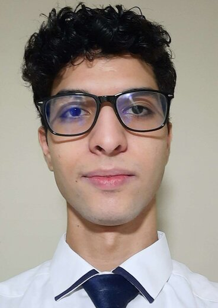

About me
My name is Julio Reyes, and I'm a web developer based in Venezuela. I like to create things and I never run away from challenges no matter how difficult they could be. Despite my lack of experience in the field, I'm confident of my abilities to make useful things and contribute in a way that feels meaningful. Among the things I value the most are effective communication, simplicity, and well-designed code.
As for my education, I'm currently studying Software Development at BYU-Idaho. I also did a couple of programming online courses, including Harvard's Introduction to Computer Science (also known as CS50), plus a lot of hours of watching YouTube tutorials, helping friends with tiny projects, and working my way to modify and solve issues of different programs and apps I use in my daily life. I am proficient with Python, and a little acquainted with Javascript and Ruby on Rails.
More stuff
Outside of work, my interests go from a wide variety of areas, I believe one should get to enjoy of everything that live has to offer. I like music, piano has been the instrument that I put the most amount of hours, but I also play guitar and ukelele from time to time. Sports have a big role in my life as I see physical well-being to be essential, and most are just plain fun, so I try and practice pretty much any of them when I'm available. I also draw and I know how to make animations, but I recognize I'm still not great at it so I need to practice more, the same with 3D modeling. I do play videogames, they can take you to a different world and make you experience stories that you'd never be able to see otherwise, sometimes even leaving you with lessons, lasting emotions, and memories that flow back whenever you hear the soundtrack. My main genres are fighting games and rhythm games, I find the difficulty and the conquering of them to be one of the most satisfying and empowering things. As for cooking, it definitely isn't one of my strong suits and I would love to spend more time refining the very art of making good food.

There is a lot more stuff I find enjoyable that I can't put in here because it would be too long. I'd be more than happy to share more, if you are interested do check [here] for my contact information.